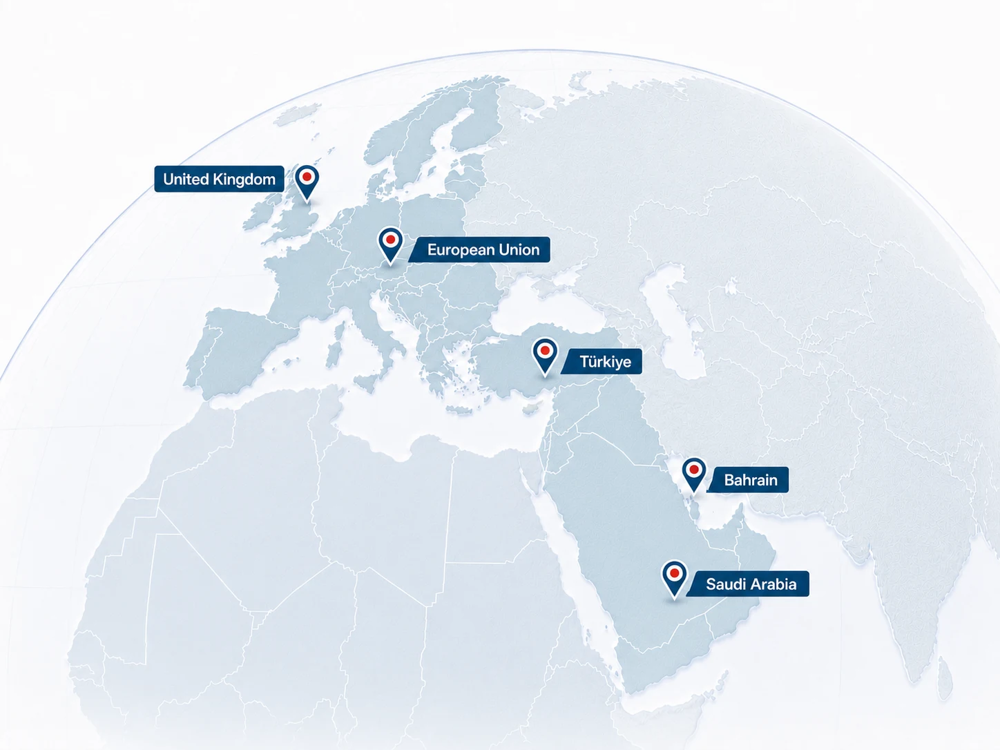

Consultancy BA
Independent regulatory, technology and assurance advisory for financial institutions. We connect regulatory interpretation with operating models, systems, controls and evidence from market entry through ongoing operation and transformation.
We do not divide a regulated institution’s lifecycle into disconnected projects.
Each service considers regulatory interpretation, operational ownership, technology impact, control design and management visibility together.
Financial Institution Licensing & Establishment
Regulatory perimeter, business model, financial plan, governance, AML/KYC, technology readiness and application management.
Explore service 02Regulatory Compliance & Regulatory Processes
Regulatory change, impact assessment, CaaS, operational oversight, regulatory requests and remediation.
Explore service 03Technology & Operational Resilience
We align technology strategy, architecture and information security governance with business objectives, making critical services, dependencies and resilience gaps visible.
Explore service 04IT Risk, Regulation & Assurance
We assess IT and cybersecurity risk, then support regulatory compliance, control testing, audit readiness and the closure of findings.
Explore service 05Financial Crime Compliance
We strengthen the end-to-end financial crime framework, from customer acceptance, sanctions screening and transaction monitoring to fraud prevention and crypto-asset risk.
Explore service 06Strategy & Transformation Advisory
Business models, feasibility, target operating models, digital transformation, architecture and E-Turquality readiness.
Explore serviceFrom regulatory text to operating control, throughout the institutional lifecycle.
We assess a requirement through how it operates in daily activity and how it can be evidenced, from establishment and ongoing compliance to regulatory response and sustainable improvement.
- Interpret the rule as an obligation and risk
- Map process, system, data, control and ownership
- Test design and operating effectiveness
- Track action, closure evidence and management reporting
Six packages connect the right expertise to the right delivery rhythm.
Packages are not separate services. A project or managed service can combine several packages.
We do not separate financial regulation from technology controls.
In licensing, continuous compliance and financial crime operations, many critical questions ultimately need to be answered at system and data level.
We compare local requirements through a common control language.
We combine our Türkiye-based experience with work involving the United Kingdom, European Union, Bahrain and Saudi Arabia. The objective is to distinguish reusable operating structures from local regulatory differences.
